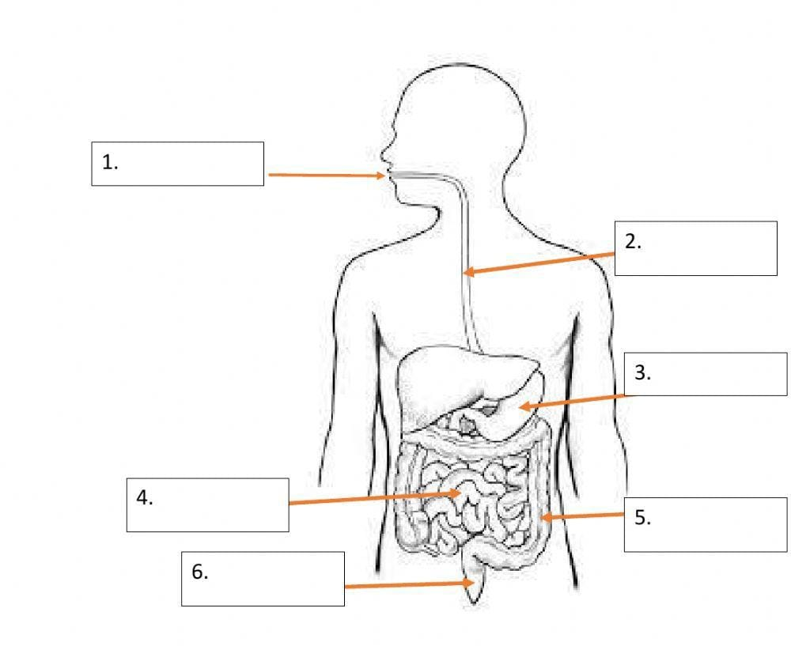
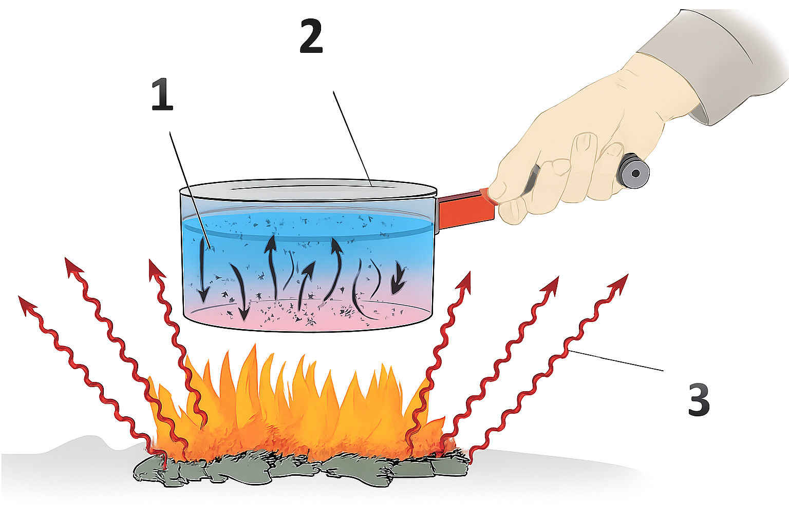

General Instructions Read Carefully
- All questions are compulsory. Read each question carefully before answering.
- Write answers neatly. Show working wherever required.
- Marks for each question are indicated in [ ].
Q.1) Tick (✓) the correct option. [1 × 10 = 10]
1)
Litmus, a natural dye, is an extract of which of the following? [1]
(a) China Rose (b) Beetroot (c) Lichen
2)
Which of the following is a chemical change? [1]
(a) Cutting of fruits (b) Cooking of vegetables (c)
Boiling of water
3)
Two organisms live together: one provides shelter, water & nutrients, while the
other prepares and provides food. This relationship is called: [1]
(a) Parasite (b) Autotroph (c) Symbiosis
4)
The liquid metal used in thermometers is: [1]
(a) Copper (b) Mercury (c) Gold
5)
Pitcher plant is an example of: [1]
(a) Insectivorous plant (b) Leguminous plant (c) Fungi
6)
Which of the following is not a part of the digestive system? [1]
(a) Food pipe (b) Wind pipe (c) Stomach
7)
Which of the following is the SI unit of speed? [1]
(a) m (b) m/s (c) m/s²
8)
A wooden spoon is dipped in a cup of ice cream. Its other end: [1]
(a) does not become cold (b) becomes cold by the process of radiation
(c) become cold by the process of convection
9)
A car travelled 60 km in 2 hours. Its speed will be: [1]
(a) 120 km/h (b) 30 km/h (c) 20 km/h
10)
When an acid reacts with a base, the products formed are: [1]
(a) Only salt (b) Salt + base (c) Salt + water
Q.2) Fill in the blanks. [1 × 10 = 10]
a) Motion of a train on a straight bridge is motion.
[1]
b) Green plants are called since they synthesize their
own food. [1]
c) The largest gland in the human body is . [1]
d) Temperature of boiling water can't be measured by a
thermometer. [1]
e) The solution which do not change the colour of either red or blue litmus paper are
called solution. [1]
f) Two methods by which rusting of iron can be prevented are and . [1]
g) When carbon-dioxide is passed through lime water, it turns milky due to the formation
of . [1]
h) Amoeba engulfs food with the help of . [1]
i) The acid present in spinach is . [1]
j) Distance between two cities is measured in . [1]
Q.3) State True (T) or False (F). [1 × 10 =
10]
a) The basic unit of time is Second – ( ) [1]
b) Speed = Distance × Time – ( ) [1]
c) Condensation of steam is not a chemical change – ( ) [1]
d) Iron and rust are same substance – ( ) [1]
e) Tooth decay is caused by presence of base – ( ) [1]
f) Sodium hydroxide turns blue litmus red – ( ) [1]
g) The small intestine is the longest part of the digestive system – ( )
[1]
h) The maximum–minimum thermometer is used to measure the daily temperature of the atmosphere –
( ) [1]
i) Radiation requires a medium for heat transfer – ( ) [1]
j) The ruminants bring back swallowed grass into their mouth and chew it for some time – (
) [1]
Q.4) Label the given diagram of the digestive system. [1 × 3 = 3]

Write the names of parts for labels 1–6.
Q.5) Match the following. (Write the correct letter a–j in front of each
number.) [1 × 10 = 10]
- Storage of undigested food
- Cuscuta
- Digestion of food
- Fats
- Odometer
- Natural indicator
- Speed meter
- Sulphuric acid
- Light coloured clothes are preferred during
- Sea breeze blows during
- Summers
- China Rose
- Measure speed
- Chemical change
- Parasite
- Measure distance travelled by vehicle
- Day
- H2SO4
- Fatty acid & glycerol
- Rectum
Q.6) Look at the figure. Mark where the heat is transferred by
conduction, by convection and by radiation. [1 × 3 = 3]

1 →
2 → 3 →
Q.7) Complete the spelling (write the correct spellings). [0.5 × 6 = 3]
a) T e m p e r a t __ r e →
b) N o n – m e t __ l s →
c) C r y s t a l l i s a __ i o n →
d) A c c e l e r a t __ o n →
e) G r a __ h →
f) D i g e s t __ o n →
Q.8) Differentiate between the following (give any two points for
each). [2 × 4 = 8]
a) Physical change and Chemical change.
b) Land breeze and Sea breeze.
c) Acid and Base.
d) Clinical thermometer and Laboratory thermometer.
Q.9) Very short answer type questions. [0.5 ×
10 = 5]
a) Name the motion of the earth around the sun.
b) What product is formed when vinegar reacts with baking soda?
c) What is the chemical name of baking soda?
d) Which base is found in soap?
e) Which type of clothes should we wear in winters?
f) What is the normal body temperature of humans?
g) What is the SI unit of temperature?
h) Name the finger-like projections in the small intestine.
i) Name the process by which green plants make their own food.
j) What is the chemical formula of lime water?
Q.10) Short answer type questions. [2 × 5 =
10]
1) Describe the process of neutralisation with the help of an example. Write the reaction
also.
2) The distance between two stations is 570 km. A train takes 3 hours to cover the
distance. Calculate the speed of the train.
3) Write down the colour change by the following natural indicators when added to acids
and bases.
China Rose – Acid: Base:
Litmus – Acid: Base:
4) What is rusting of iron? State any two methods to prevent rusting.
5) Define the terms: (i) Conductor (ii) Indicator (iii) Motion (iv) Insulator.
Q.11) Long answer type questions. [Total =
8]
1) Describe how crystals of copper sulphate are prepared. [3]
2) Show the shape of the distance–time graph in the following cases: (i) a car moving with
a constant speed, (ii) a car parked on a side road. [2]
3) Draw a labelled diagram of Amoeba and label three parts – nucleus, food vacuole and
pseudopodia. [3]